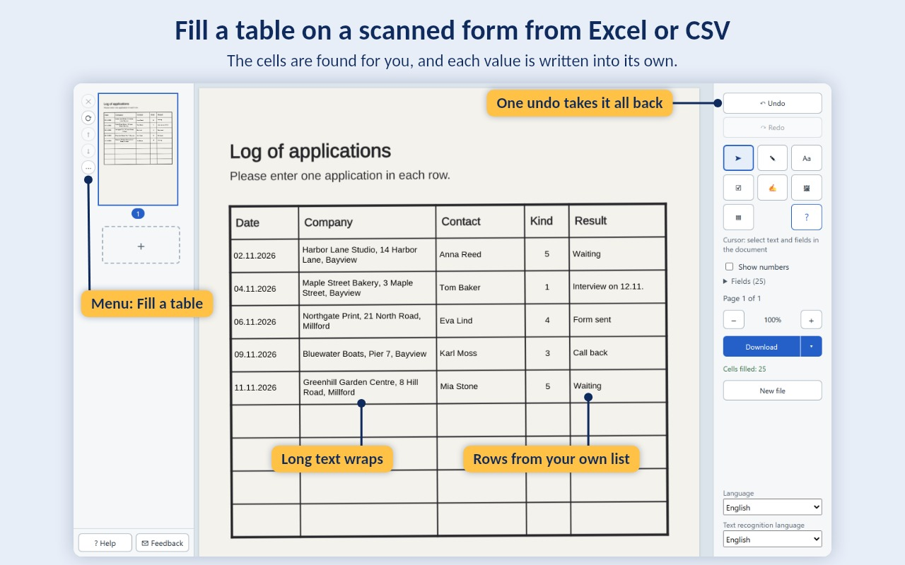

Edit PDFs and fill in forms without uploading them
LocalPDF is a free PDF editor that keeps your documents on your computer. No account, no servers, no network access: your files never leave your machine.
This is a beta. Check the result and keep your originals.
What it does
- Fill in formsA PDF's own fields, or fields you place yourself: text, ticks, crosses, signatures and pictures.
- Fill a table on a scanRows from an Excel or CSV file, or pasted from a spreadsheet, go into the empty cells of a scanned form.
- Edit text in placeClick a line or a word and retype it, in the document's own font when the file holds it.
- Remove text for realReplaced text is cut out of the saved file, not only covered.
- Fill with any AI, offlineCopy the numbered fields into the AI chat you choose and paste its answer back. LocalPDF itself sends nothing.
- Recognize scansOffline text recognition in eight languages makes scans searchable.
- Manage pagesDelete, rotate and reorder pages, merge PDFs and pictures, put in a photo of a page signed by hand.
Screenshots




Your privacy
LocalPDF does not collect, send or share any data. The Windows app blocks all outside network requests. The browser extension asks for no permissions and cannot connect to any website. Text recognition, fonts and everything else run on your computer.
This page uses no cookies, no counters and no outside scripts or fonts.